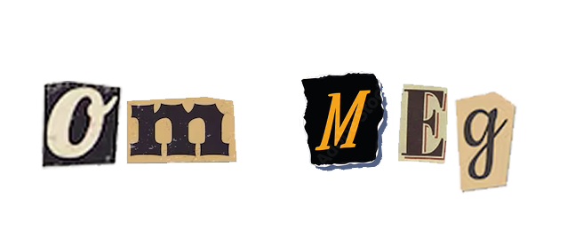
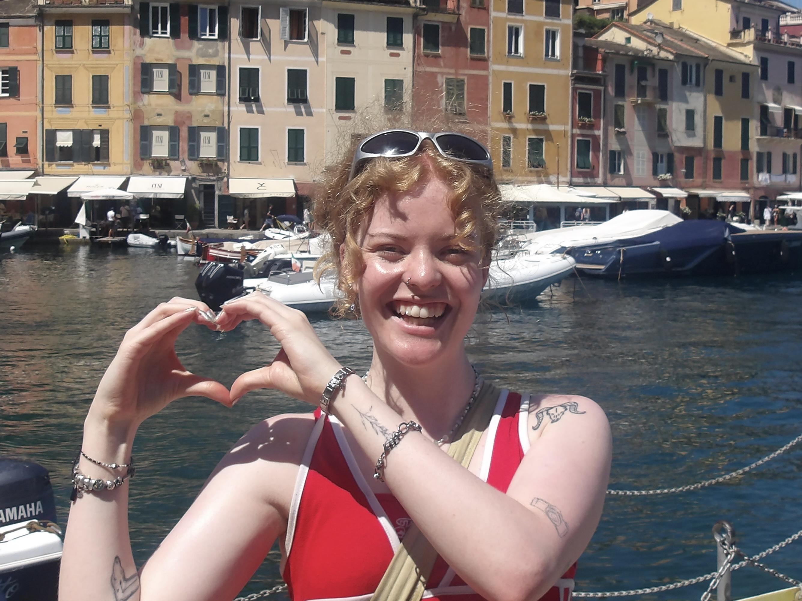
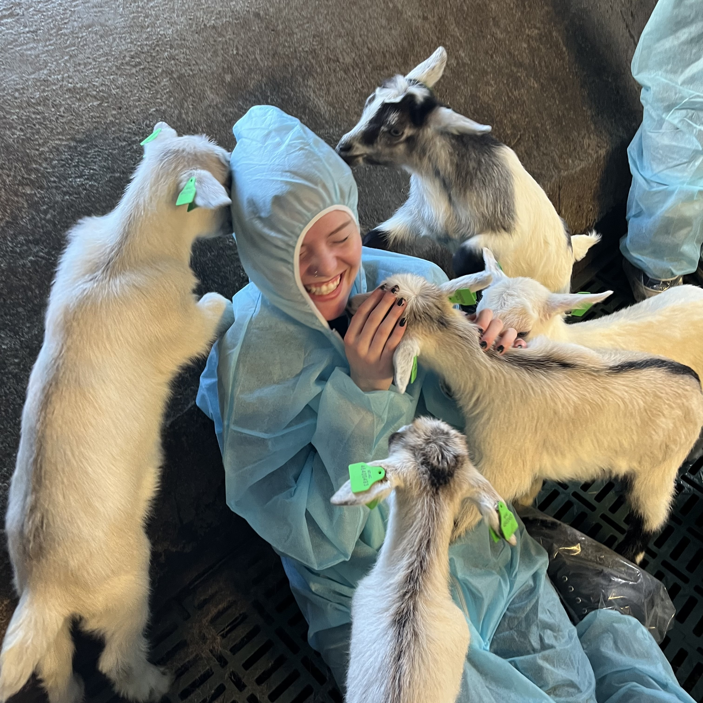
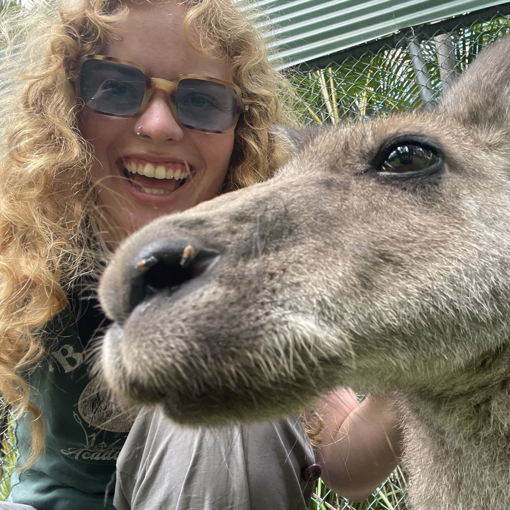
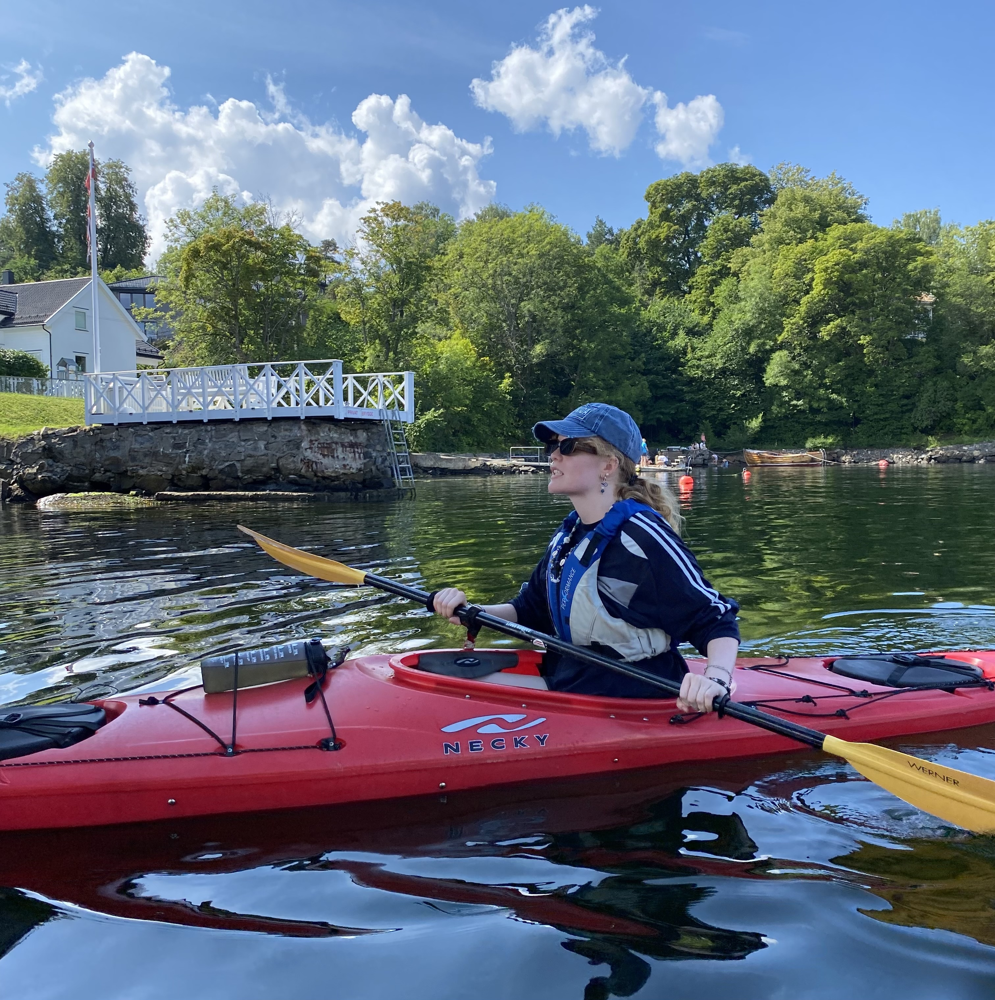
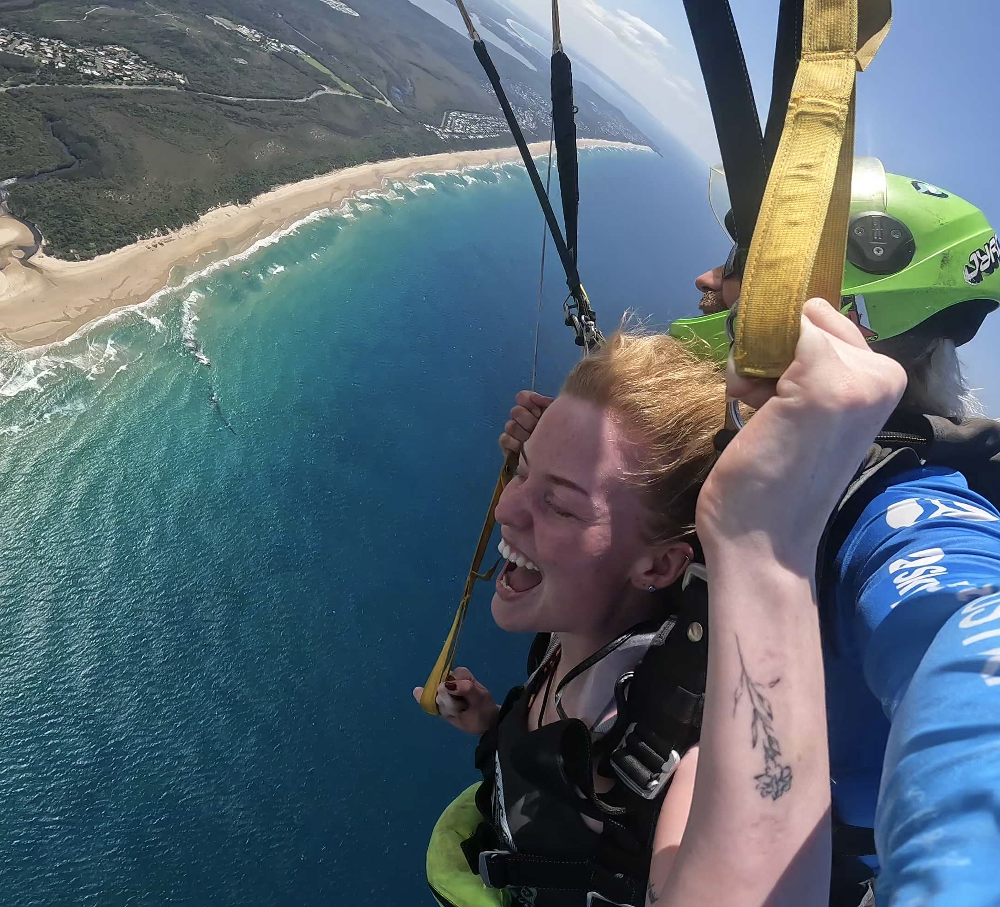

Heihei! Jeg er Linn og jeg elsker å lage ting og lære alt mulig. Med en lang interresse for kunst og design, og nå en bachelor i Informatikk: Design, Bruk og Interaksjon, liker jeg å utforske balansen mellom det visuelle og det tekniske.
Som en kreativ og nysjerrig person er jeg kronisk på utkikk etter nye ferdigheter og hobbyer, som jeg alltid finner en måte å kombinere inn i arbeidet mitt. Jeg synes det er utrolig fascinerende å jobbe med det menneskelige inntrykket av teknologi, og hvordan man kan bruke design for å skape bedre brukeropplevelser.
I fritiden er jeg som oftest opptatt med noe kreativt eller aktivt, så lenge det inspirerer meg. Jeg henter ofte inspirasjon fra mange ulike interesser, blant annet; foto, kunst, håndverk, musikk, teknologi, psykologi, filosofi, litteratur, reise, kultur og natur. Jeg thriver når jeg har mye å gjøre og lære, med rom for kreativitet og entusiasme.
Åpne CV



